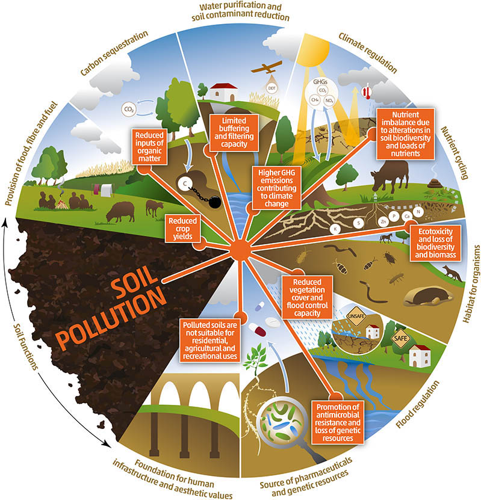
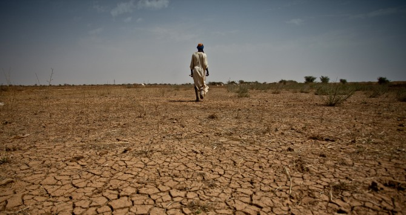
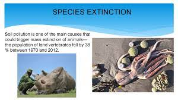
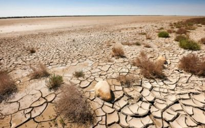

SOIL POLLUTION
Soil pollution is a pressing environmental concern that arises from the introduction of harmful substances into the Earth's soil, leading to adverse effects on its quality, fertility, and overall health. This form of pollution is a result of human activities such as industrial processes, agricultural practices, improper waste disposal, and the use of hazardous chemicals. The contamination of soil with pollutants like heavy metals, pesticides, industrial chemicals, and untreated waste poses serious threats to ecosystems, human health, and biodiversity. As the world's population continues to grow and industrialization expands, the problem of soil pollution becomes more pronounced. Contaminated soil negatively impacts agricultural productivity, reducing crop yields and jeopardizing food safety. Additionally, pollutants can leach into groundwater, further exacerbating the environmental consequences. The consequences of soil pollution extend beyond the immediate affected areas, with far-reaching implications for global ecosystems and the delicate balance of the planet's natural processes. Efforts to address soil pollution require a multidisciplinary approach, involving scientific research, policy initiatives, and public awareness. Sustainable land management practices, responsible waste disposal, and the development of cleaner technologies are crucial steps toward mitigating and preventing soil pollution. By understanding the causes and consequences of soil pollution, society can work towards preserving this essential resource for current and future generations, promoting environmental sustainability and the well-being of the planet.
CAUSES OF SOIL POLLUTION
Soil pollution is a complex phenomenon, and it can be triggered by various things and activities, from littering cigarette butts to excess use of chemical fertilizers. Every cause is linked with another. It is quite difficult to pinpoint one particular cause. However, the leading causes are listed below:
1. Industrial Activity
 Industrial activity has been the biggest contributor to the problem in the last century, especially since mining and manufacturing have increased. Most industries are dependent on extracting minerals from the earth.
Whether it is iron ore or coal, the by-products are contaminated and not disposed off in a manner that can be considered safe. As a result, industrial waste lingers on the soil surface for a long time, making it unsuitable for use.
Industrial activity has been the biggest contributor to the problem in the last century, especially since mining and manufacturing have increased. Most industries are dependent on extracting minerals from the earth.
Whether it is iron ore or coal, the by-products are contaminated and not disposed off in a manner that can be considered safe. As a result, industrial waste lingers on the soil surface for a long time, making it unsuitable for use.2. Agricultural Activities
 The utilization of chemicals has gone up tremendously since technology has provided us with modern pesticides and fertilizers. They are full of chemicals not produced in nature and cannot be broken down. As a result, they seep into the ground after mixing with water and slowly reduce the soil fertility.
The utilization of chemicals has gone up tremendously since technology has provided us with modern pesticides and fertilizers. They are full of chemicals not produced in nature and cannot be broken down. As a result, they seep into the ground after mixing with water and slowly reduce the soil fertility.agricultural practices Other chemicals damage the composition of the soil and make it more erodible by water and air. Plants absorb many of these pesticides, and when they decompose, they cause soil pollution since they become a part of the land.
3. Waste Disposal
 Finally, a growing concern is how we dispose of our waste. While industrial waste is sure to cause contamination, there is another way in which we are adding to the pollution. Every person excretes a certain amount of personal waste in the form of urine and faeces.
While much of it moves into the sewer system, a large amount is dumped directly into landfills in the form of diapers. Even the sewer system ends at the landfill, where the biological waste pollutes the soil and water. This is because our bodies are full of toxins and chemicals that are now seeping into the land and causing soil pollution.
Finally, a growing concern is how we dispose of our waste. While industrial waste is sure to cause contamination, there is another way in which we are adding to the pollution. Every person excretes a certain amount of personal waste in the form of urine and faeces.
While much of it moves into the sewer system, a large amount is dumped directly into landfills in the form of diapers. Even the sewer system ends at the landfill, where the biological waste pollutes the soil and water. This is because our bodies are full of toxins and chemicals that are now seeping into the land and causing soil pollution. 4. Oil spilling
 Oil leaks can happen during the storage and transport of chemicals. This can be seen mostly in fuel stations. The chemicals in the fuel deteriorate the soil quality and make it unsuitable for cultivation. These chemicals can enter the groundwater through the soil, making the water undrinkable.
Oil leaks can happen during the storage and transport of chemicals. This can be seen mostly in fuel stations. The chemicals in the fuel deteriorate the soil quality and make it unsuitable for cultivation. These chemicals can enter the groundwater through the soil, making the water undrinkable. 5. Acid Rain
 Acid rain is caused when pollutants present in the air mix up with the rain and fall back on the ground. The polluted water could dissolve away some of the essential nutrients found in the soil and change the structure of the soil.
Acid rain is caused when pollutants present in the air mix up with the rain and fall back on the ground. The polluted water could dissolve away some of the essential nutrients found in the soil and change the structure of the soil.EFFECTS OF SOIL POLLUTION

The toxic chemicals present in the soil can decrease soil fertility and therefore decrease the soil yield. The contaminated soil is then used to produce fruits and vegetables, which lack quality nutrients and may contain poisonous substances that cause serious health problems to people consuming them.that are indicated below:
Damage to health:
 Soil pollutants enter our body through the food chain, causing illnesses to appear. Moreover, the spread of antibiotics in the environment increases the pathogens' resistance to these drugs.Soil pollution affects soil fertility; this jeopardises food security, which is essential for human survival. It also poses risks to human health — both indirectly through the consumption of contaminated food and drinking water, and directly through exposure to contaminated soil.
Soil pollutants enter our body through the food chain, causing illnesses to appear. Moreover, the spread of antibiotics in the environment increases the pathogens' resistance to these drugs.Soil pollution affects soil fertility; this jeopardises food security, which is essential for human survival. It also poses risks to human health — both indirectly through the consumption of contaminated food and drinking water, and directly through exposure to contaminated soil.
Poorer harvests:
 Soil pollution agents jeopardise world food security by reducing the amount and quality of harvests.
Soil pollution agents jeopardise world food security by reducing the amount and quality of harvests.
Climate change:
 From 2015 to 2050, 69 gigatonnes of CO2 will be emitted as a result of land use change and land degradation, a figure that represents 17% of current greenhouse gas emissions each year
From 2015 to 2050, 69 gigatonnes of CO2 will be emitted as a result of land use change and land degradation, a figure that represents 17% of current greenhouse gas emissions each year
Water and air pollution:
 Soil degradation affects the quality of air and water, particularly in developing countries.
Soil degradation affects the quality of air and water, particularly in developing countries.
Population displacement:

Soil degradation and climate change will have driven between 50 and 700 million people to emigrate by 2050.
Species extinction:

Soil contamination is one of the main causes that could trigger the sixth mass extinction event in history —wildlife populations fell by 69% between 1970 and 2018, according to WWF's Living Planet Report—.
Desertification:

The number of inhabitants in the most arid areas of the earth could account for 45 % of the world's population in 2050, while world wetland areas have decreased in size by 87 % over the last three centuries.
Economic impact:
 Global economic losses caused by soil degradation are expected to be more than half of the world's annual Gross Domestic Product (GDP)
Global economic losses caused by soil degradation are expected to be more than half of the world's annual Gross Domestic Product (GDP)
POSSIBLE SOLUTIONS OF SOIL POLLUTION
Soil pollution is a complex problem that ought to be solved. We all must realize how important soil is to us. This will help us cab the soil pollution problem in a better way. It is a complex problem; thus, it requires everyone, from individuals to the government, to work in complete unison.Listed below are a few things that could help in reducing soil pollution.
1. Reduced Use of Chemical Fertilizers
Chemical fertilizers overuse can result in soil acidification and crust and do more harm than good. While proper amounts could enhance the fertility of the soil, an excess of it actually poisons the soil. When they are overused, they cause soil pollution in the following ways:- could mess with the pH levels of the soil.
- Destroys the good microorganisms in the soil.
- Causes water pollution
2. Reforestation and Afforestation Should be Promoted
One of the major causes of soil pollution is soil erosion, which is caused due to deforestation. It is natural that, with an ever-growing population, humankind needs more and more space to expand its civilization. Often, it is achieved at the cost of soil health. To prevent this from happening, reforestation of a deforested area should be promoted.that is "TREE PLANTING"
Also, afforestation should be promoted and encouraged in the barren lands. The roots of the plants bind the soil particles together and even capture good microorganisms in the soil. It also ensures the maintenance of the underground water table.
3. Recycle and Reuse Products
These steps not only reduce waste generation but also ensure that soil pollution is reduced. Currently, plastics form a significant portion of the generated waste. More often than not, this waste is buried in landfills.In these landfills, plastics and other materials decompose slowly and release toxic materials into the soil. These toxic substances are very harmful to the health of the soil and are a major source of soil pollution.
Reusing and recycling things would ensure less waste is dumped in these landfills, reducing soil pollution.